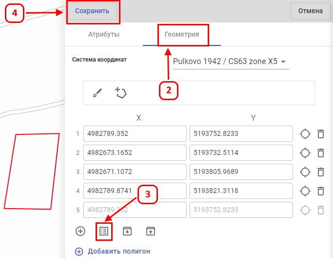

Для создания (добавления) объекта на карте по координатам из блокнота, требуется:
-
Выполнить все предыдущие шаги по вводу данных (1-3) из предыдущего пункта "Создание объектов путём рисования на
карте".
- Перейти на второй этап ввода данных, нажав на кнопку «Геометрия».
- Кликнуть на значок «Координаты контура как текст».
- В появившемся окне, ввести (вставить из буфера) данные координат и нажать на кнопку «Сохранить».
